1 ペンタ
1/20｜2025/11/30
54UFN
多了哪些牌
 +3
+3 +2
+2 +2
+2 +1+1
+1+1 +1+1
+1+1 +1
+1少了哪些牌
-3-2 -2-2
-2-2 -1-1
-1-1 -1
-1
-2-2-1-1-1主BP04-010/BP04-P02：小さな勇士・スクナ主卡组 × 2主BP18-123/PR-477：炎術検定A級主卡组 × 2 主BP18-126/BP18-P49：区役所の丙種職員主卡组 × 3
主BP18-126/BP18-P49：区役所の丙種職員主卡组 × 3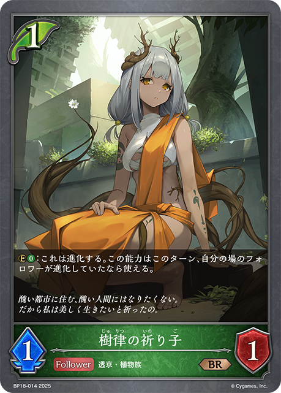
主BP18-014/BP18-P07：樹律の祈り子主卡组 × 2 主BP18-120/PR-463：新約都市・透京主卡组 × 3
主BP18-120/PR-463：新約都市・透京主卡组 × 3 主BP18-117/BP18-SL27：魔汚区役所職員・災藤主卡组 × 3主BP18-119/PR-481：歪なる進歩主卡组 × 1
主BP18-117/BP18-SL27：魔汚区役所職員・災藤主卡组 × 3主BP18-119/PR-481：歪なる進歩主卡组 × 1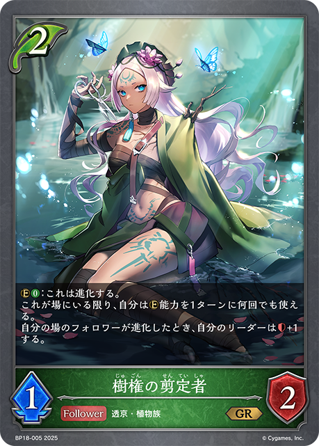
主BP18-005/BP18-P01：樹権の剪定者主卡组 × 3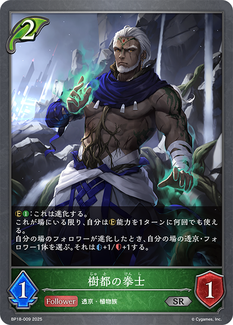
主BP18-009/BP18-P05：樹都の拳士主卡组 × 3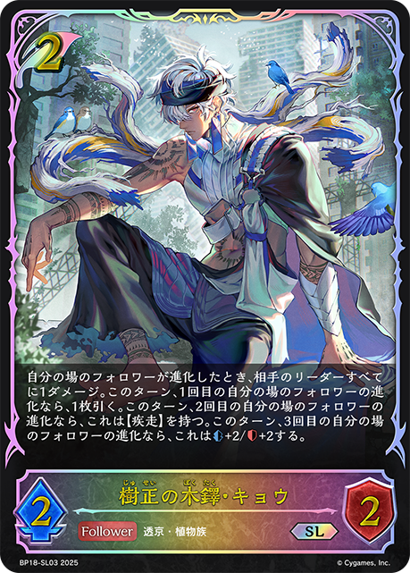
主BP18-003/BP18-SL03：樹正の木鐸・キョウ主卡组 × 3主BP13-110/BP13-P25：虚無ノ哭風・グリームニル主卡组 × 2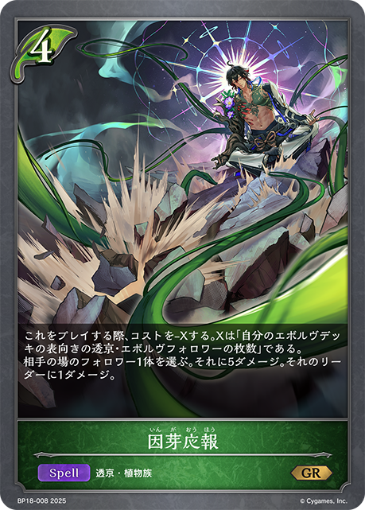
主BP18-008/BP18-P04：因芽応報主卡组 × 3 主BP18-001/BP18-SL01：浄樹の六銘伝・ロロ・ロニエ主卡组 × 3
主BP18-001/BP18-SL01：浄樹の六銘伝・ロロ・ロニエ主卡组 × 3 主BP15-004/BP15-SL04/PR-394：凍土の女王・ピアシィ主卡组 × 3
主BP15-004/BP15-SL04/PR-394：凍土の女王・ピアシィ主卡组 × 3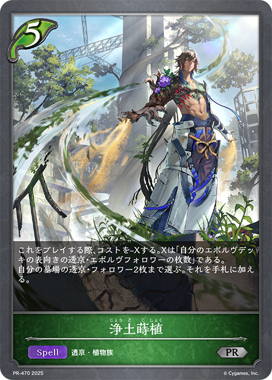
主BP18-013/PR-470：浄土蒔植主卡组 × 2主BP18-116/BP18-SL26：帥忍部長・煤木万裁主卡组 × 1主BP13-107/BP13-SL23：ワールドブレイク主卡组 × 1进BP04-011/BP04-P03：小さな勇士・スクナ进化 × 1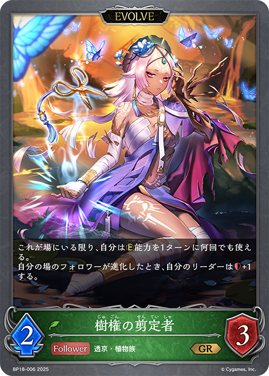
进BP18-006/BP18-P02：樹権の剪定者进化 × 2 进BP18-118/BP18-SL28/BP18-U07：魔汚区役所職員・災藤进化 × 1
进BP18-118/BP18-SL28/BP18-U07：魔汚区役所職員・災藤进化 × 1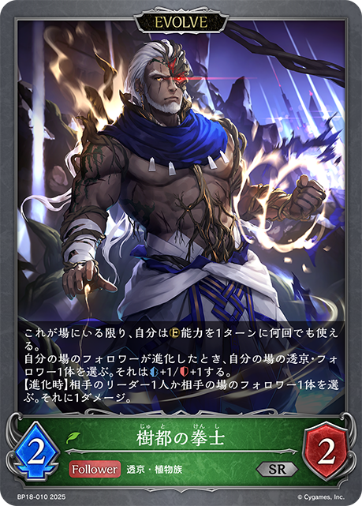
进BP18-010/BP18-P06：樹都の拳士进化 × 2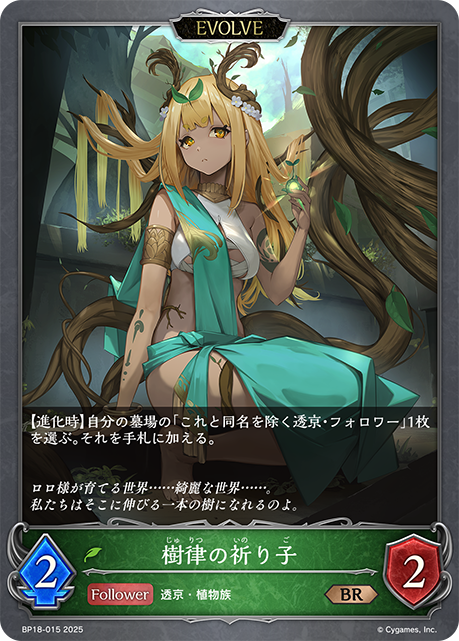
进BP18-015/BP18-P08：樹律の祈り子进化 × 1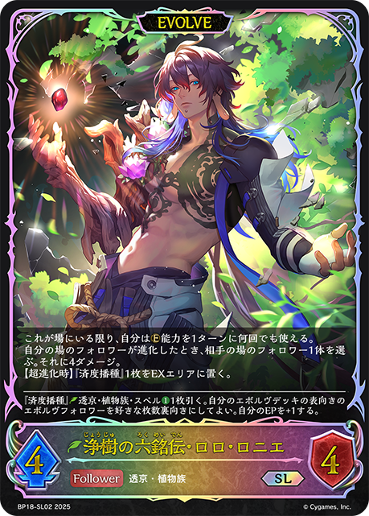
进BP18-002/BP18-SL02/BP18-U01：浄樹の六銘伝・ロロ・ロニエ进化 × 2 进BP15-005/BP15-SL05/PR-395：凍土の女王・ピアシィ进化 × 1+3+2+2+1+1+1+1+1-2-2-1-1-1
进BP15-005/BP15-SL05/PR-395：凍土の女王・ピアシィ进化 × 1+3+2+2+1+1+1+1+1-2-2-1-1-1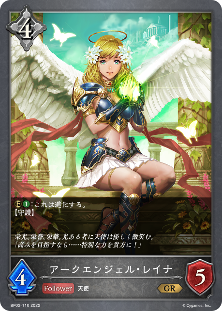
+3+3+3 +2
+2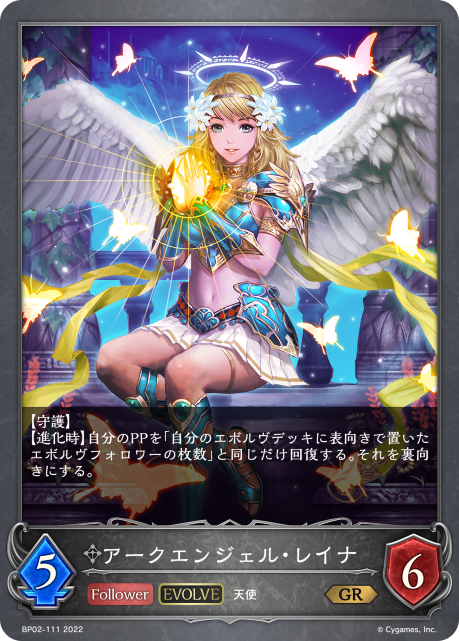
+1+1+1+1-3-2-2-1-1-1-1-1-1-1-1+3+2+2+1+1+1-3-2-2-1-1-1-1-1-1+3+2+1+1+1+1-3-2-2-1-1+2+2+1+1+1-2-2-2-1-1-1-1+2+1+1+1-2-1-1-1+2+1+1-2-1-1+1+1-1-1+2+1+1-2-1-1+2+2+1+1+1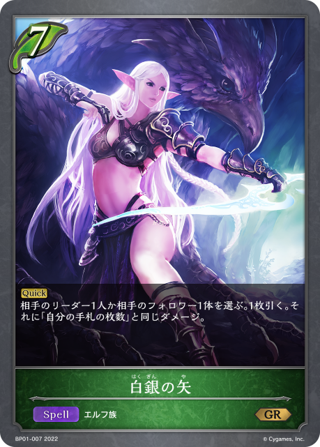
+1+1+1-2-2-2-1+3+2+2+2+1+1+1-2-1-1 +3
+3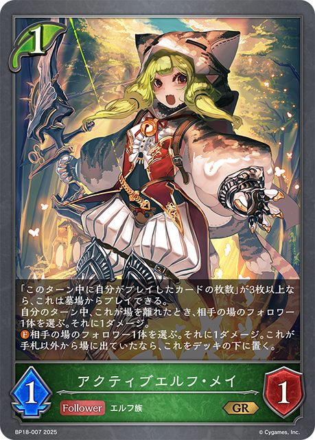
+3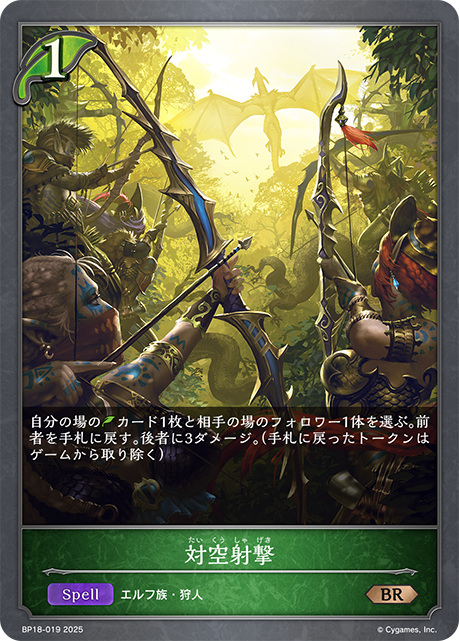
+3+3+2+1+1+1+1-3-2-2-2-1-1-1+3 +2+2
+2+2 +1+1-2-2-2-1-1-1+3
+1+1-2-2-2-1-1-1+3 +2+2+2
+2+2+2 +1+1-2-1-1-1-1+3
+1+1-2-1-1-1-1+3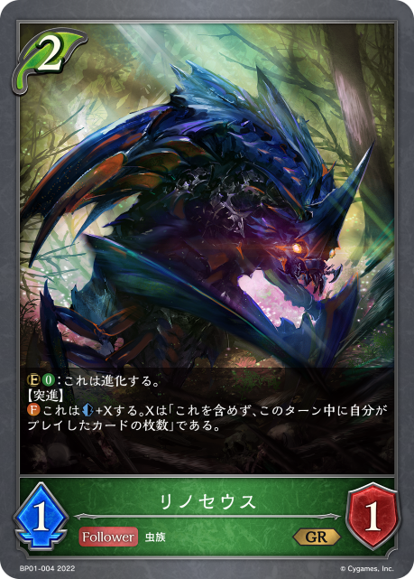
+2+2+2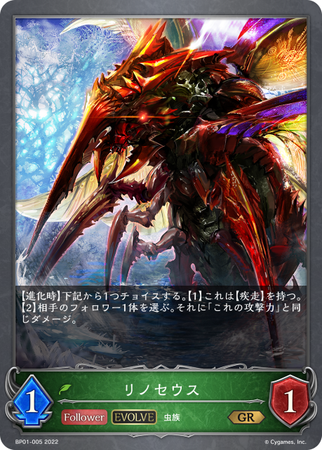
+1+1+1+1-2-2-1-1-1-1+2+2+1+1+1+1+1-2-2-1-1+2+2+1+1+1-2-2-2-1-1-1-1+1+1-2-2-2-1-1-1+2+2+1+1+1-2-2-1-1-1+2+2+2+1+1-2-2-1-1-1-1+3+2+1+1-2-2-2-1-1-1-1+2+1+1+1+1+1-2-2-1-1-1+3+2+2+2+2+1+1+1+1+1-2-2-2-2-1-1-1+3+3+2+1+1+1 +1
+1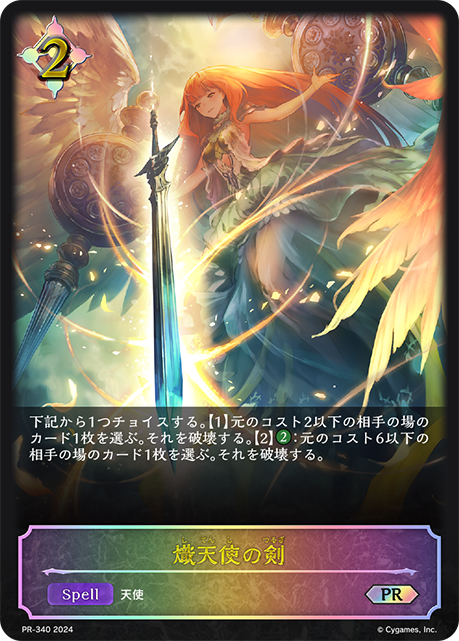
+1+1+1+1-3-2-2-2-2-1-1+3+1+1-2-2-1-1-1-1+2+2+2+1+1+1+1+1+1-2-2-2-2-1+2+2+1+1-2-1-1-1-1+3+3+1+1+1-2-2-1-1-1-1-1+3+2+2+2+1+1-2-2-1-1-1-1+2+2+2+1+1+1-2-2-1-1-1-1-1+2+1+1-2-2-2-1+2+2+1-2-1-1-1+3 +3
+3 +2+2+2
+2+2+2 +1+1
+1+1 +1+1+1-3-3-2-2-2-1-1-1-1-1+3+2+2+1+1-3-2-1-1-1-1+3+3+3+2+2+2+1+1+1+1
+1+1+1-3-3-2-2-2-1-1-1-1-1+3+2+2+1+1-3-2-1-1-1-1+3+3+3+2+2+2+1+1+1+1 +1+1+1-3-3-2-2-2-1-1-1-1+2+2+2+1+1+1+1+1+1-2-2-2-2-1+2+2+1+1+1+1+1-2-2-1-1+2+2+2+1+1+1+1+1+1-2-2-2-2-1+3+3+2+2+1+1-3-2-2-2-1-1-1+2+2+2+1+1+1+1+1+1-2-2-2-2-1+3+3+2+1+1+1+1+1+1-3-3-2-2-1-1-1-1+3+2+2+2+1+1+1+1-3-2-2-1-1-1-1-1-1+3+3
+1+1+1-3-3-2-2-2-1-1-1-1+2+2+2+1+1+1+1+1+1-2-2-2-2-1+2+2+1+1+1+1+1-2-2-1-1+2+2+2+1+1+1+1+1+1-2-2-2-2-1+3+3+2+2+1+1-3-2-2-2-1-1-1+2+2+2+1+1+1+1+1+1-2-2-2-2-1+3+3+2+1+1+1+1+1+1-3-3-2-2-1-1-1-1+3+2+2+2+1+1+1+1-3-2-2-1-1-1-1-1-1+3+3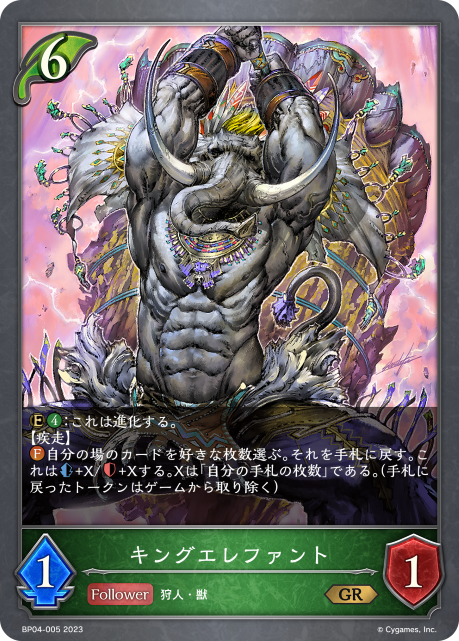
+2+2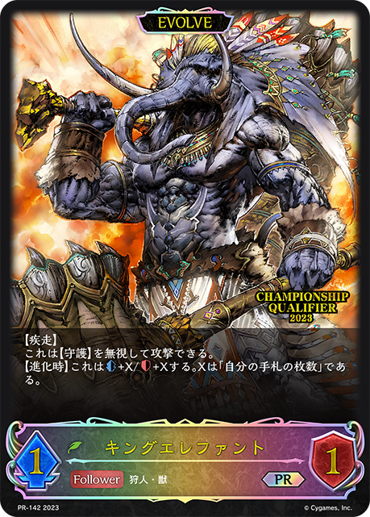
+1+1+1+1+1 +1+1+1+1-3-3-3-2-2-2-2-1-1+3
+1+1+1+1-3-3-3-2-2-2-2-1-1+3 +3+2+1+1+1+1-3-2-2-1-1-1-1-1+3+2+2+2+1+1+1+1-2-2-1+3+2+2+2+1+1+1+1-2-2-2-1-1-1-1+2+2
+3+2+1+1+1+1-3-2-2-1-1-1-1-1+3+2+2+2+1+1+1+1-2-2-1+3+2+2+2+1+1+1+1-2-2-2-1-1-1-1+2+2 +1+1+1-2-2-1+3+2+1+1+1-2-2-2-1-1-1-1-1+2+2+1+1+1+1-2-1+2+2+1+1-2-1-1-1-1+2+2
+1+1+1-2-2-1+3+2+1+1+1-2-2-2-1-1-1-1-1+2+2+1+1+1+1-2-1+2+2+1+1-2-1-1-1-1+2+2 +1-2+2+2-2-1-1+1+1-1-1+3+3+3+3+2+1+1+1+1
+1-2+2+2-2-1-1+1+1-1-1+3+3+3+3+2+1+1+1+1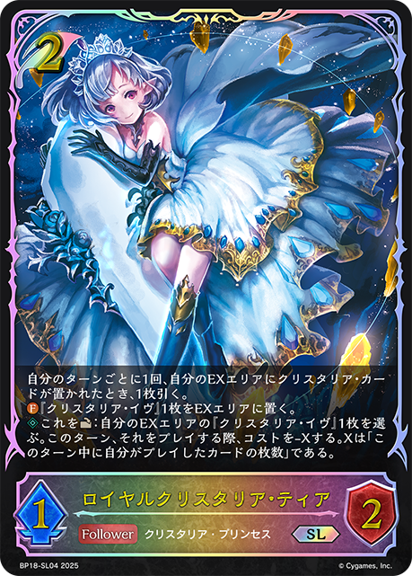
+1+1-3-3-2-2-2-1-1-1-1-1+3+3+3+2+1+1+1+1-3-3-2-2-1-1-1-1-1+3+2+2+2+1+1+1+1-2-2-1-1-1-1+3+3+2+1+1+1+1-2-2-1-1-1+3+1-1-1-1-1+1+1-2-2-2-1-1-1+2+2+1+1+1+1+1+1-2-2-2-1+2+1+1-2-1-1+2+1-2-2-1-1+2+2+1+1+1+1+1-3-2-2-1-1-1-1-1+2+2+1+1-2-2-1-1+2+1+1-2-1-1+2+2+1+1+1-2-2-2-1-1-1-1+3+3+3+2+2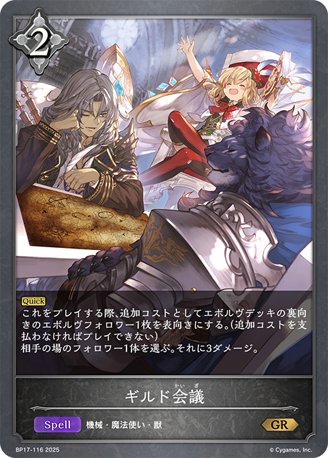
+2+1+1+1-3-3-2-2-1-1-1-1-1+2+1-1-1-1+3+2+1+1+1+1-3-2-2-1-1+3+3+2+1+1+1+1+1+1-2-2-1-1+3+1+1+1+1+1-3-2-1-1-1+2+2+1+1+1-2-2-2-1-1-1+2+1+1+1-2-1-1-1| 图片 | 平均张数 | 使用率 | 0张比例 | 1张比例 | 2张比例 | 3张比例 |
|---|---|---|---|---|---|---|
|
3.00 | 100.0% | 0.0% | 0.0% | 0.0% | 100.0% |
| 3.00 | 100.0% | 0.0% | 0.0% | 0.0% | 100.0% | |
| 2.96 | 100.0% | 0.0% | 1.4% | 1.4% | 97.3% | |
| 2.42 | 100.0% | 0.0% | 1.4% | 55.4% | 43.2% | |
|
2.91 | 98.6% | 1.4% | 0.0% | 5.4% | 93.2% |
|
2.85 | 95.9% | 4.1% | 0.0% | 2.7% | 93.2% |
| 2.36 | 95.9% | 4.1% | 4.1% | 43.2% | 48.6% | |
|
2.72 | 90.5% | 9.5% | 0.0% | 0.0% | 90.5% |
|
1.78 | 85.1% | 14.9% | 14.9% | 47.3% | 23.0% |
| 1.54 | 82.4% | 17.6% | 28.4% | 36.5% | 17.6% | |
|
2.19 | 81.1% | 18.9% | 8.1% | 8.1% | 64.9% |
|
1.96 | 73.0% | 27.0% | 2.7% | 17.6% | 52.7% |
| 1.77 | 68.9% | 31.1% | 6.8% | 16.2% | 45.9% | |
|
0.69 | 67.6% | 32.4% | 66.2% | 1.4% | 0.0% |
|
1.49 | 66.2% | 33.8% | 1.4% | 47.3% | 17.6% |
|
0.51 | 51.4% | 48.6% | 51.4% | 0.0% | 0.0% |
| 1.20 | 50.0% | 50.0% | 2.7% | 24.3% | 23.0% | |
|
1.11 | 48.6% | 51.4% | 1.4% | 32.4% | 14.9% |
|
1.15 | 47.3% | 52.7% | 2.7% | 21.6% | 23.0% |
|
0.47 | 21.6% | 78.4% | 4.1% | 9.5% | 8.1% |
|
0.41 | 18.9% | 81.1% | 6.8% | 2.7% | 9.5% |
|
0.35 | 14.9% | 85.1% | 0.0% | 9.5% | 5.4% |
|
0.31 | 12.2% | 87.8% | 0.0% | 5.4% | 6.8% |
| 0.16 | 5.4% | 94.6% | 0.0% | 0.0% | 5.4% | |
| 0.12 | 4.1% | 95.9% | 0.0% | 0.0% | 4.1% | |
| 0.08 | 4.1% | 95.9% | 0.0% | 4.1% | 0.0% | |
|
0.08 | 4.1% | 95.9% | 0.0% | 4.1% | 0.0% |
| 0.04 | 4.1% | 95.9% | 4.1% | 0.0% | 0.0% | |
|
0.08 | 2.7% | 97.3% | 0.0% | 0.0% | 2.7% |
| 0.05 | 2.7% | 97.3% | 0.0% | 2.7% | 0.0% | |
|
0.04 | 2.7% | 97.3% | 1.4% | 1.4% | 0.0% |
|
0.03 | 2.7% | 97.3% | 2.7% | 0.0% | 0.0% |
|
0.04 | 1.4% | 98.6% | 0.0% | 0.0% | 1.4% |
|
0.03 | 1.4% | 98.6% | 0.0% | 1.4% | 0.0% |
| 0.03 | 1.4% | 98.6% | 0.0% | 1.4% | 0.0% | |
|
0.01 | 1.4% | 98.6% | 1.4% | 0.0% | 0.0% |
|
0.01 | 1.4% | 98.6% | 1.4% | 0.0% | 0.0% |
| 0.01 | 1.4% | 98.6% | 1.4% | 0.0% | 0.0% | |
|
0.01 | 1.4% | 98.6% | 1.4% | 0.0% | 0.0% |
| 0.01 | 1.4% | 98.6% | 1.4% | 0.0% | 0.0% |
| 图片 | 平均张数 | 使用率 | 0张比例 | 1张比例 | 2张比例 | 3张比例 |
|---|---|---|---|---|---|---|
| 2.32 | 100.0% | 0.0% | 0.0% | 67.6% | 32.4% | |
| 2.01 | 100.0% | 0.0% | 0.0% | 98.6% | 1.4% | |
| 1.41 | 100.0% | 0.0% | 59.5% | 40.5% | 0.0% | |
|
1.01 | 98.6% | 1.4% | 95.9% | 2.7% | 0.0% |
|
0.99 | 89.2% | 10.8% | 79.7% | 9.5% | 0.0% |
| 0.93 | 67.6% | 32.4% | 41.9% | 25.7% | 0.0% | |
| 0.50 | 50.0% | 50.0% | 50.0% | 0.0% | 0.0% | |
|
0.54 | 48.6% | 51.4% | 43.2% | 5.4% | 0.0% |
|
0.15 | 14.9% | 85.1% | 14.9% | 0.0% | 0.0% |
| 0.04 | 4.1% | 95.9% | 4.1% | 0.0% | 0.0% | |
|
0.04 | 4.1% | 95.9% | 4.1% | 0.0% | 0.0% |
| 0.03 | 2.7% | 97.3% | 2.7% | 0.0% | 0.0% | |
|
0.01 | 1.4% | 98.6% | 1.4% | 0.0% | 0.0% |
|
0.01 | 1.4% | 98.6% | 1.4% | 0.0% | 0.0% |